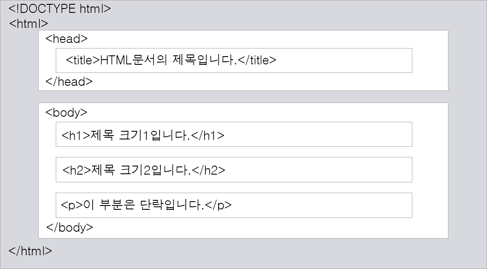

HTML은 Hyper Text Markup Language라는 용어의 약자로 물리학자 팀 버너스리가 1990년에 HTTP, URL, 브라우저와 함께 개발했습니다. 팀 버너스리는 인터넷의 기반을 닦은 여러 공로로 웹의 아버지라고 불리는 인물 중 하나입니다. 또한, HTML은 제목, 단락, 목록 등과 같은 본문을 위한 구조적 의미를 나타내는 것뿐만 아니라 링크, 인용과 그 밖의 항목으로 구조적 문서를 만들 수 있는 방법을 제공한다. 그리고 이미지와 객체를 내장하고 대화형 양식을 생성하는 데 사용될 수 있다. HTML은 웹 페이지 콘텐츠 안의 꺾쇠 괄호에 둘러싸인 "태그"로 되어있는 HTML 요소 형태로 작성한다. HTML은 웹 브라우저와 같은 HTML 처리 장치의 행동에 영향을 주는 자바스크립트와 본문과 그 밖의 항목의 외관과 배치를 정의하는 CSS 같은 스크립트를 포함하거나 불러올 수 있다. HTML과 CSS 표준의 공동 책임자인 W3C는 명확하고 표상적인 마크업을 위하여 CSS의 사용을 권장한다.
웹문서의 표준
마크업 언어
일반적인 텍스트 파일
컴퓨터 시스템과 운영체제에 독립적
웹문서의 내용 표현에 집중
구조화된 정보의 표현과 검색의 어려움
제한적인 태그
문서의 유효성 검증과 제약조건 정의의 어려룸
다음은 HTML 문서의 기본적인 구조를 보여주는 그림입니다.

< !DOCTYPE html >: 현재 문서가 HTML5 문서임을 명시
< html >: HTML 문서의 루트(root) 요소를 정의
< head >: HTML 문서의 메타데이터(metadata)를 정의
- 메타데이터(metadata)란 HTML 문서에 대한 정보(data)로 웹 브라우저에는 직접적으로 표현되지 않는 정보
- 이러한 메타데이터는 < title >, < style >, < link >, < script >, < base >태그 등을 이용하여 표현할 수 있음
< title >: HTML 문서의 제목(title)을 정의하며, 다음과 같은 용도로 사용
- 웹 브라우저의 툴바(toplbar)에 표시
- 웹 브라우저의 즐겨찾기(favorites)에 추가할 때 즐겨찾기의 제목이 됨
- 검색 엔진의 결과 페이지에 제목으로 표시
< body >: 웹 브라우저를 통해 보이는 내요(content) 부분
< h1 >~< h6 >: 제목(heading)을 나타냄
< p >: 단락(paragraph)을 나타냄
HTML에서 홈페이지를 만드려면 위에 있는 링크를 클릭해서 사이트 들어가서 배워봐요~^^